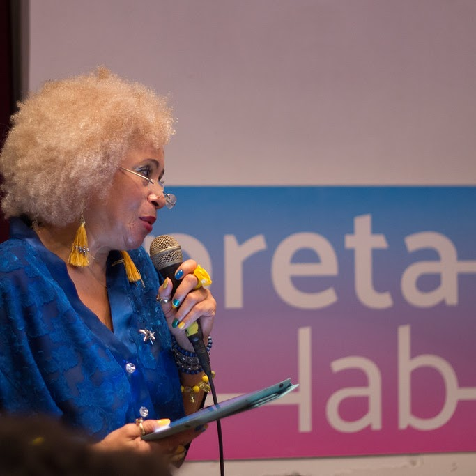

Trilha 1 - Front-end

Nessa etapa, que tem a duração de uma semana, você deverá realizar algumas atividades relacionadas ao planejamento e organização da sua jornada no Programa Descodificadas.
Esta etapa tem como objetivo ajuda-la a identificar e definir o seu propósito individual e sua conexão com a área de desenvolvimento de software.